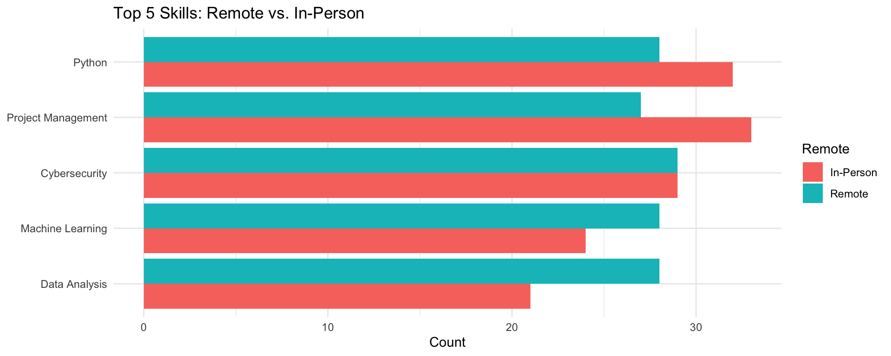
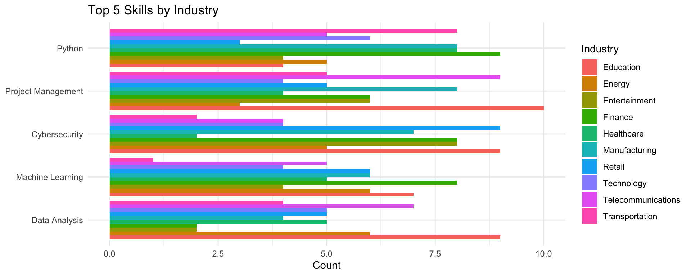
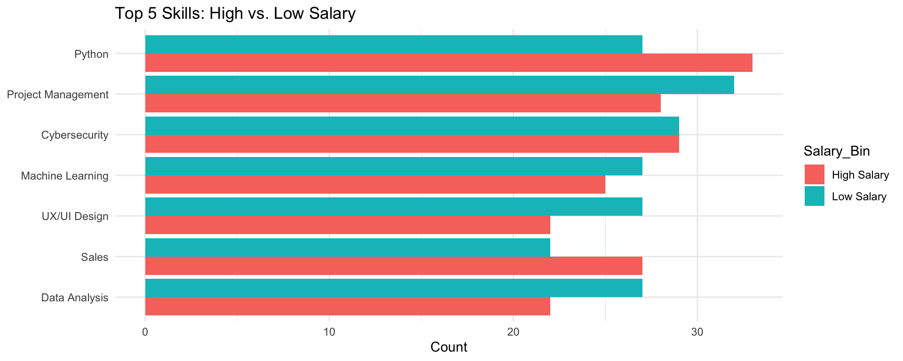

library(tidyverse)
df <- read_csv("ai_job_market_insights.csv")
# Clean, split skills, and create flags
ro3_data <- df %>%
filter(!is.na(Required_Skills), !is.na(Remote_Friendly), !is.na(Industry), !is.na(Salary_USD)) %>%
separate_rows(Required_Skills, sep = ",\\s*") %>%
mutate(
Remote = if_else(Remote_Friendly == "Yes", "Remote", "In-Person"),
Salary_Bin = if_else(Salary_USD > median(Salary_USD, na.rm = TRUE), "High Salary", "Low Salary")
)
# Select top 5 most common skills overall
top5_skills <- ro3_data %>%
count(Required_Skills, name = "Total") %>%
arrange(desc(Total)) %>%
slice_head(n = 5) %>%
pull(Required_Skills)
# Subset to top 5
ro3_top5 <- filter(ro3_data, Required_Skills %in% top5_skills)
# Summary tables
remote_counts <- ro3_top5 %>% count(Required_Skills, Remote, name = "Count")
industry_counts <- ro3_top5 %>% count(Required_Skills, Industry, name = "Count")
salary_counts <- ro3_top5 %>% count(Required_Skills, Salary_Bin, name = "Count")AI & the Future of Work: Skills Demand Insights
Amenah Altamimi, Bryant Ha, Shaza Mumtaz
AI & the Future of Work: Skills Demand Insights
Amenah Altamimi, Bryant Ha, Shaza Mumtaz
Table of Contents
- Introduction
- Problem Definition
- Research Objectives
- Importance of the Research
- RO3: Skills Demand Insights
Introduction
Welcome to our analysis on how AI adoption is transforming the global job market. This presentation focuses on identifying emerging skill demands and the influence of remote versus in-person work environments.
Problem Definition
Rapid AI integration is reshaping job roles and required skill sets. Organizations face challenges in workforce planning, upskilling, and aligning recruitment with evolving market needs.
Research Objectives
- RO1: Assess the impact of AI adoption on overall job growth or decline.
- RO2: Identify which job roles are most affected by AI and why.
- RO3: Determine the most in-demand skills and examine how remote vs. in-person work influences skill requirements.
Importance of the Research
- For Businesses: Guides strategic hiring and training programs.
- For Employees: Clarifies skill development pathways for career resilience.
- For Policymakers: Informs education and workforce policies to support an AI-driven economy.
RQ3 / H3
Research Question 3 (RQ3): What skills are most in demand in an AI-driven job market, and how does remote work versus in-person work affect these skill requirements?
Hypothesis 3 (H3): The prevalence of certain skills differs significantly between remote and in-person roles, with technical skills (e.g., Python, Cloud Architecture) being more common in remote positions and soft skills (e.g., Communication, Teamwork) more common in in-person roles.
Variables and Their Roles
| Variable | Role | Description |
|---|---|---|
| Required_Skills | Dependent Variable (DV) | Count of each individual skill extracted from job listings |
| Remote | Independent Variable 1 | Categorical: “Remote” vs. “In-Person” |
| Industry | Independent Variable 2 | Categorical: sector of the job (e.g., Tech, Marketing) |
| Salary_Bin | Independent Variable 3 | Categorical: “High Salary” vs. “Low Salary” |
Operationalization of the Scale
- Required_Skills: Each skill listed in
Required_Skillsis split into one row per skill; frequency counts measure demand.
- Remote: Derived from
Remote_Friendlycolumn; binary factor.
- Industry: Directly from
Industryfield; nominal categories.
- Salary_Bin: Binned at the median
Salary_USD; above = “High Salary”, below = “Low Salary”.
Data Wrangling
Data Visualization
Skills by Work Mode
Skills Across Industries
Skills by Salary Tier
Modeling (Optional)
(For further analysis, one could fit a multinomial logistic regression predicting skill demand by Remote, Industry, and Salary_Bin.)
Summary Findings
- Remote vs. In-Person: Remote roles demand more technical skills (e.g., Python, Cloud Architecture), whereas in-person roles emphasize soft skills (e.g., Communication, Teamwork).
- Industry Differences: Tech roles favor Machine Learning and Data Analysis, while Marketing/Retail focus on SEO and Creative Suite.
- Salary Tier: High-paying positions require advanced skills like AI Ethics and Cloud Architecture; lower-paying roles rely on MS Office and Basic SQL.

AI Job Market Analysis